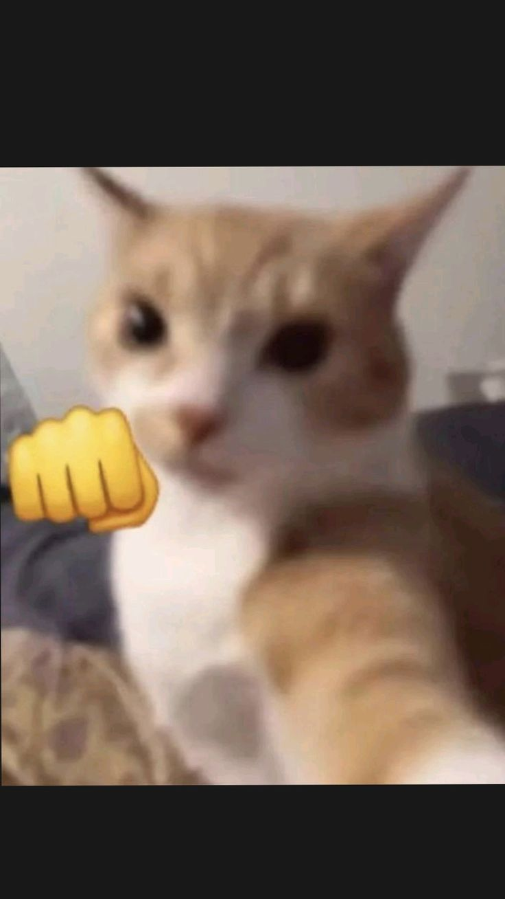
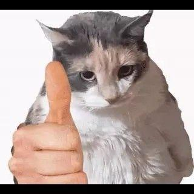
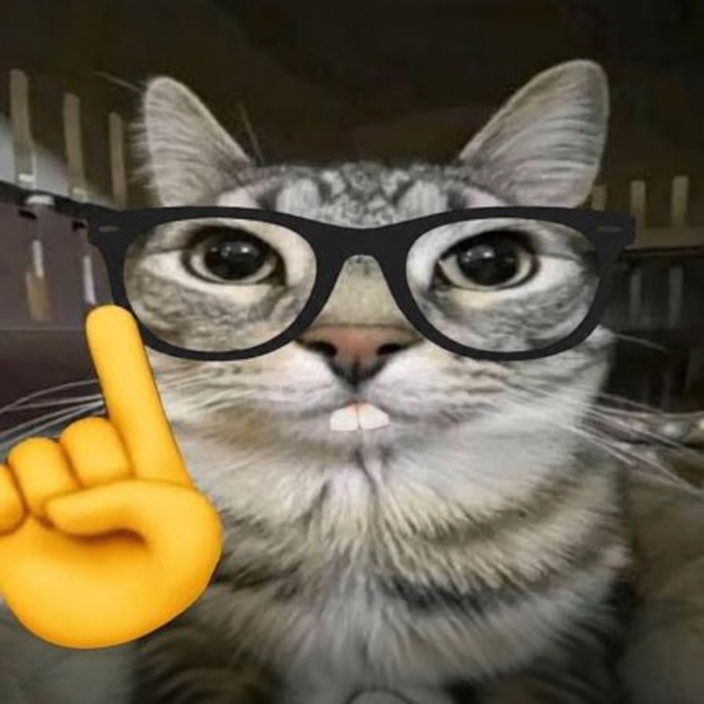
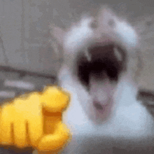
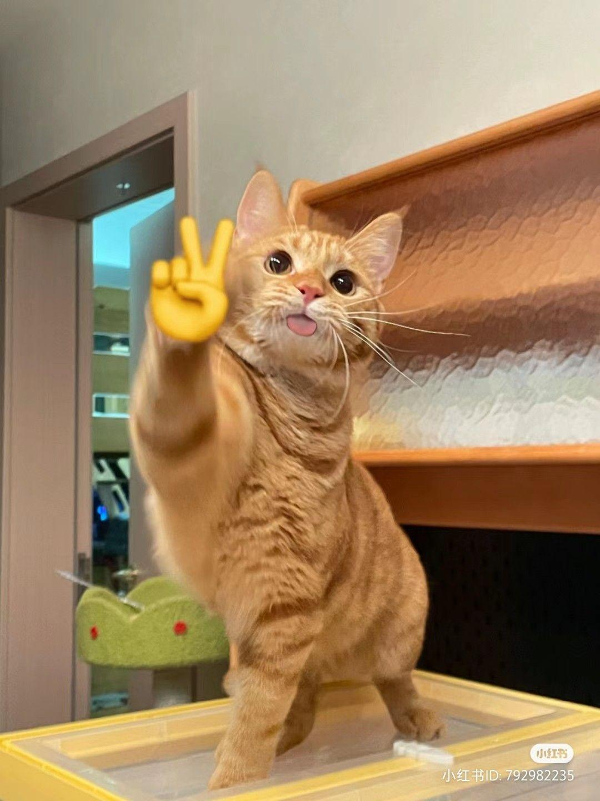
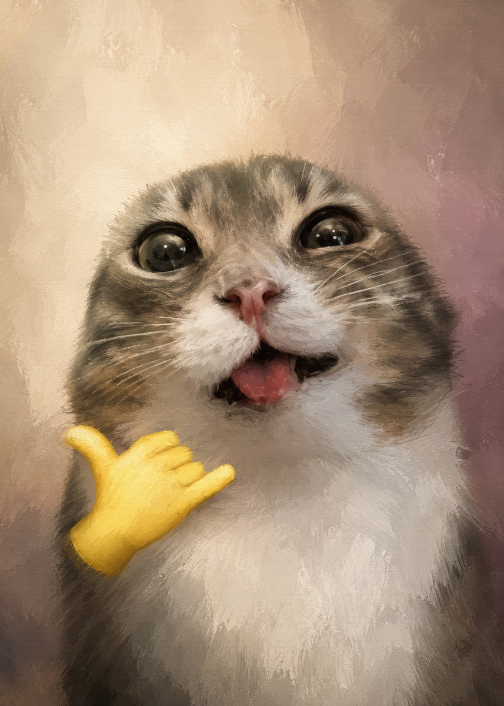
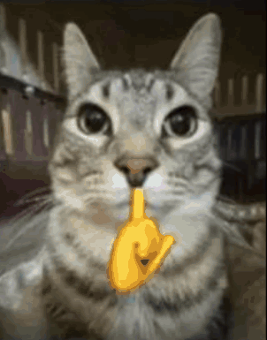
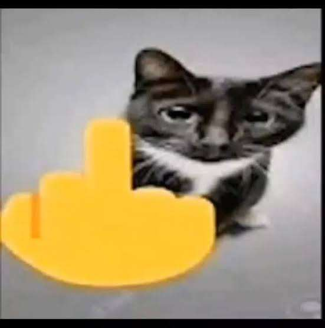

✊ Кулак
Сожми пальцы в кулак. Направление руки не важно.
Запусти камеру и разреши доступ. Покажи жест любой рукой и удерживай его немного: кот появится после короткой задержки. Убери жест — вернется обычный кот.

Сожми пальцы в кулак. Направление руки не важно.

Подними большой палец, остальные согни.

Подними только указательный палец вертикально вверх.

Направь указательный палец в объектив и открой рот. Остальные пальцы согни.

Разведи указательный и средний пальцы буквой V. Остальные согни.

Выпрями большой палец и мизинец. Три пальца в середине согни.

Поднеси вертикальный указательный палец к губам. Лицо должно быть видно камере.

Выпрями только средний палец, остальные согни.
Для проверки показывай один жест за раз. Держи кисть целиком в кадре и используй хорошее освещение. Картинки отражаются по стороне руки на экране; обычный кот не отражается. Все распознавание происходит в твоем браузере.